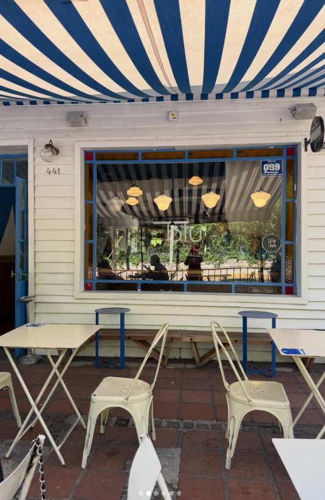
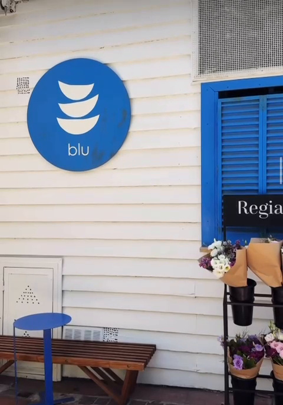
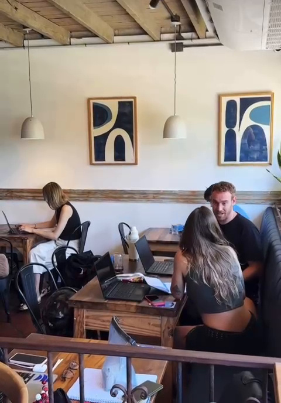
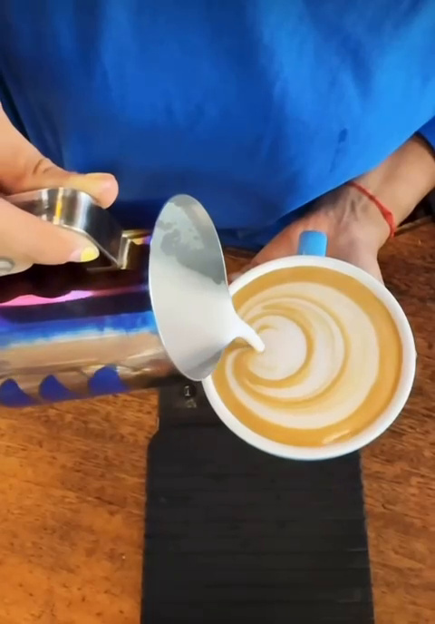
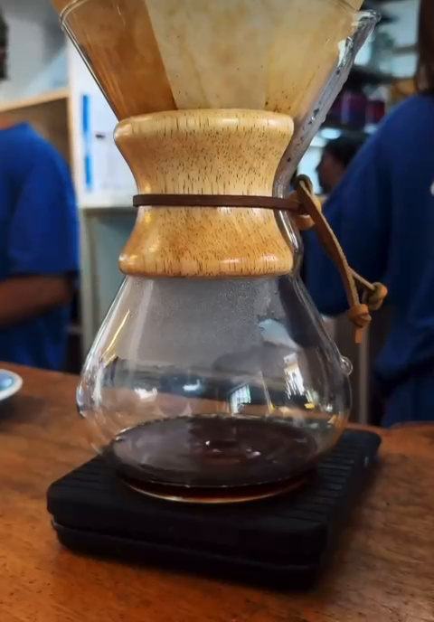
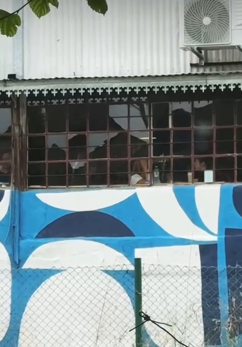
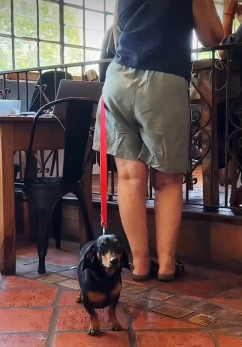
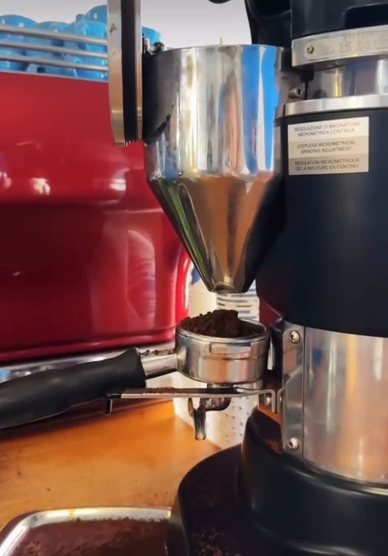
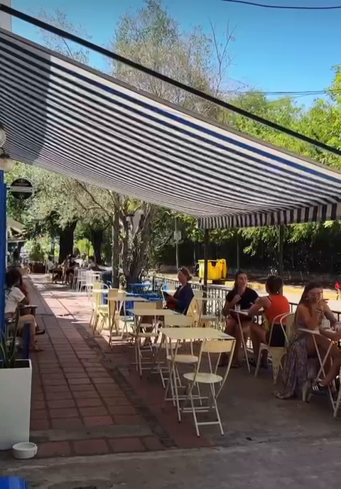

Sobre Blu
Somos un café de barrio pensado para encontrarse, trabajar o simplemente hacer una pausa.
Un espacio cálido, moderno y tranquilo donde el buen café y la buena compañía siempre son bienvenidos.
Blu nació de las ganas de tener un lugar propio en el barrio: una casa de madera con toldo a rayas, mesas en la vereda y una barra donde el café se prepara sin apuro.
Todo lo dulce y lo salado lo hacemos acá, todos los días, para que siempre haya algo recién salido del horno. Y el azul, nuestro color, está en cada rincón: en las puertas, en las tazas y en el mural del patio.
Lo que nos importa
Tres ideas que guían todo lo que pasa en la barra y en la cocina.
Buen café
Trabajamos con un blend de Guatemala, Colombia y Brasil y te lo preparamos como más te guste: espresso, filtrado o frío.
Hecho acá
Medialunas, tortas, cookies y alfajores salen de nuestro horno todos los días.
Para todos
Opciones veganas, sin TACC y con leche vegetal. Y si venís con tu perro, también es bienvenido.
Un día en Blu
Más en Instagram







Vení a conocernos
Desde la entrada hasta el patio del mural: así es nuestro espacio.
Horarios y ubicación